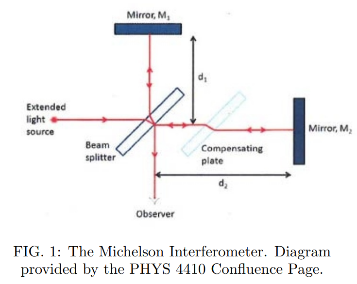
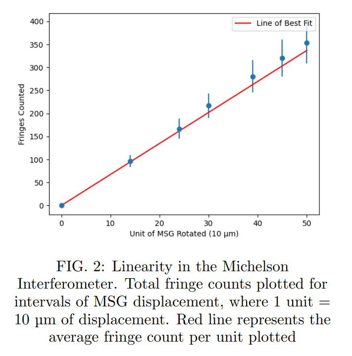
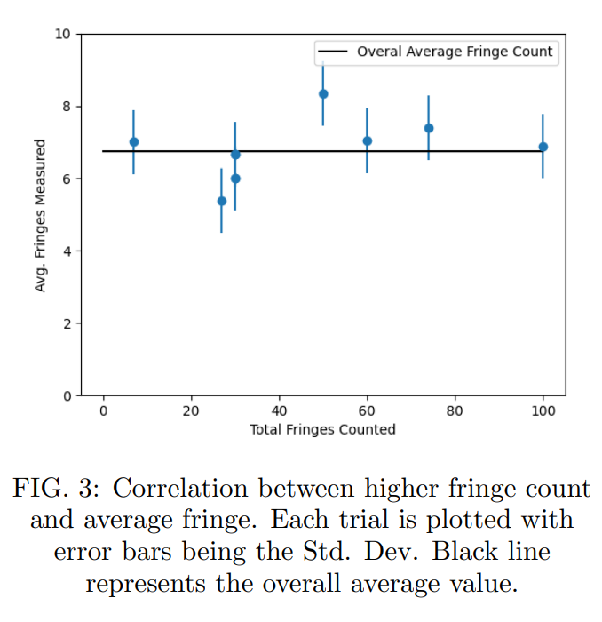
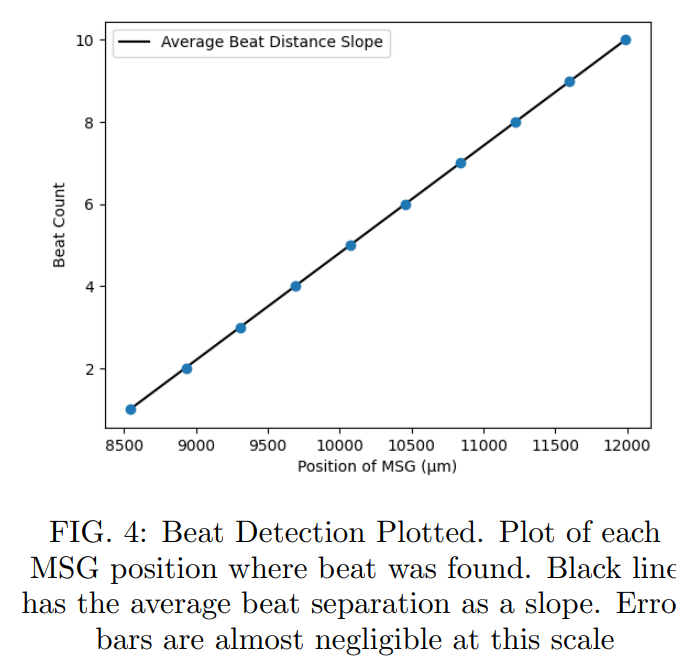
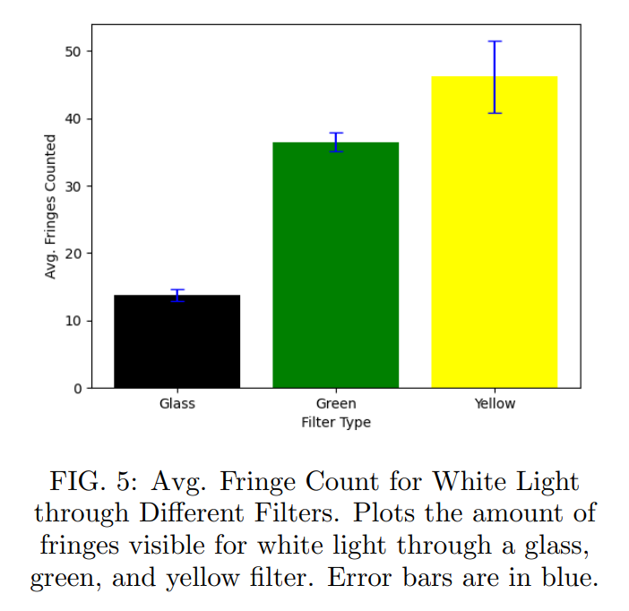

Michelson Interferometer Precision Measurement
Keywords: Interferometry | Optics | Beat Frequency Analysis | Spectral Bandwidth
View Full Lab Report (PDF)Overview
This experiment investigated interference phenomena using a Michelson Interferometer to explore calibration, beat frequency behavior, and spectral bandwidth. Using the known wavelength of mercury green light, 546.1 nm, we determined a conversion factor from displacement in the Micrometer Screw Gauge (MSG) to displacement in Mirror 1 (M1). By measuring an average of 6.74 fringes per 10 µm of MSG displacement, we determined a conversion factor of $1.84\pm0.24$ µm of M1 displacement per 10 µm MSG displacement. Through this conversion factor, we were able to measure distances using the Michelson Interferometer, specifically the distances between beats in mercury yellow light. Across a range of 3,830 µm of MSG displacement, 10 beats were observed. With an average beat separation calculated, the wavelength separation of the mercury yellow doublet wavelengths could be determined. Our estimation of $2.31\pm0.31$ nm was within a reasonable range of the actual value of 2.11 nm. White light was then used with glass, green, and yellow filters to examine how spectral bandwidth affects fringe visibility. As predicted, broader spectral sources produced fewer visible fringes due to overlapping wavelength interference. These results demonstrate the capabilities of the Michelson Interferometer as a multi-purpose tool.
Introduction & Theory
The Michelson Interferometer is a crucial tool in optics used in many different ways, from measuring the diameter of stars to precisely measuring lengths. The instrument is designed to split light into two paths with a controllable difference in path length. The two separated beams will meet again and combine. Depending on the path length difference, interference patterns can appear as a result of the light waves' phase being off from one another. What we observe when this occurs is a pattern of bright peaks and dark fringes where constructive and destructive interference occurs, respectively. Interference patterns also depend on the wavelengths of light that split. The more frequencies of light being split and recombined, the more interference we will observe due to the multiple wavelengths of light interfering with each other.
Apparatus and Methods
The Michelson Interferometer consists of a 45° beam splitter that transmits approximately 50% of the light and reflects the other 50%. The reflected path travels to Mirror 1 (M1), which is mounted on a Micrometer Screw Gauge (MSG) that allows for precise control of its position. The transmitted path goes through a compensating plate, parallel to the beam splitter, before reflecting off Mirror 2 (M2). The compensating plate is used so that the transmitted light passes through the same amount of glass as the reflected light does. Because the light is reflected back to the beam splitter, any motion of M1 changes the optical path difference by twice that displacement.

To analyze the beat frequency phenomena in the mercury yellow doublet, the following equations and approximations were used to determine the wavelength separation: $\Delta\lambda=\frac{\lambda_{1}\cdot\lambda_{2}}{\lambda_{beat}}\approx\frac{\lambda_{avg}^{2}}{\lambda_{beat}}$, where $\lambda_{beat}$ is the measured mirror displacement between beats. We also used white light under a glass, green, and yellow filter to understand how the amount of different frequencies present affects the interference pattern, predicting that more unique wavelengths would result in a smaller range for the interference pattern.
Results and Discussion
Over the course of the 10 trials we took, the average number of fringes passing per 10 µm of MSG displacement was 6.74. Dividing this number by a factor of two gives us our final conversion factor of $1.84~\mu m$ of M1 displacement per $10\mu m$ of MSG displacement with $\pm0.24~\mu m$ of error.


Observing the mercury yellow lines, the entire set of data yielded 10 beats over the course of $3,830~\mu m$ of MSG displacement. Therefore the average distance between beats was $383~\mu m$ of MSG displacement, which converts to $141~\mu m$ of M1 displacement. Using our approximation, the wavelength separation calculated is $2.31\pm0.31$ nm, which falls within our range of error calculated compared to the actual value of 2.11 nm.

For the white light spectral bandwidth results, the glass filter showed 13.8 fringes on average. The green and yellow filters caused many more fringes to appear, on average 36.5 and 46.2 fringes respectively. The reason for this is due to the filters blocking out more frequencies than a glass filter, which causes there to be less interference allowing there to be more fringes to appear before disappearing.

Conclusion
Our experiment demonstrated the possibilities and limits of the Michelson Interferometer with respect to investigating interference phenomena and understanding spectral bandwidth. By using the mercury green line, we were able to calibrate the Interferometer so that a conversion factor could be used for future measurements. We concluded that the majority of error stems from human limitations as the only detector available was our own eyes. With respect to studying the interference phenomenon of beat frequencies, the interferometer proved to be a useful tool for measuring the wavelength separation that causes beat frequencies. Our final objective of observing spectral bandwidth was a success, as we noted that filters with larger spectral bandwidth demonstrated smaller fringe counts than those with smaller bandwidths. We can take away from these results that smaller bandwidths provide greater detail with more visible fringes, but at the cost of losing frequencies of light, whereas higher bandwidths provide less detail but compensate by having a larger variety of frequencies.